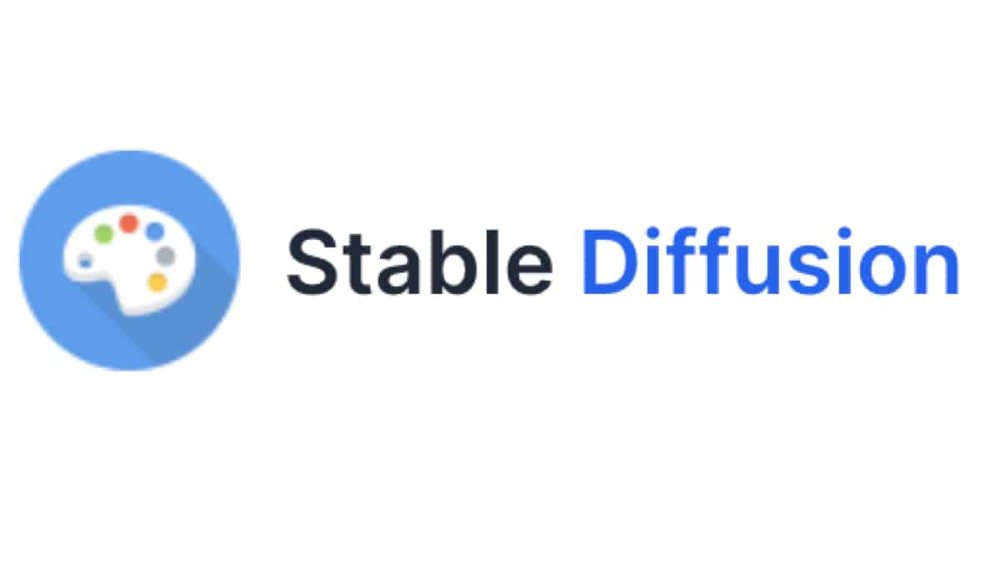
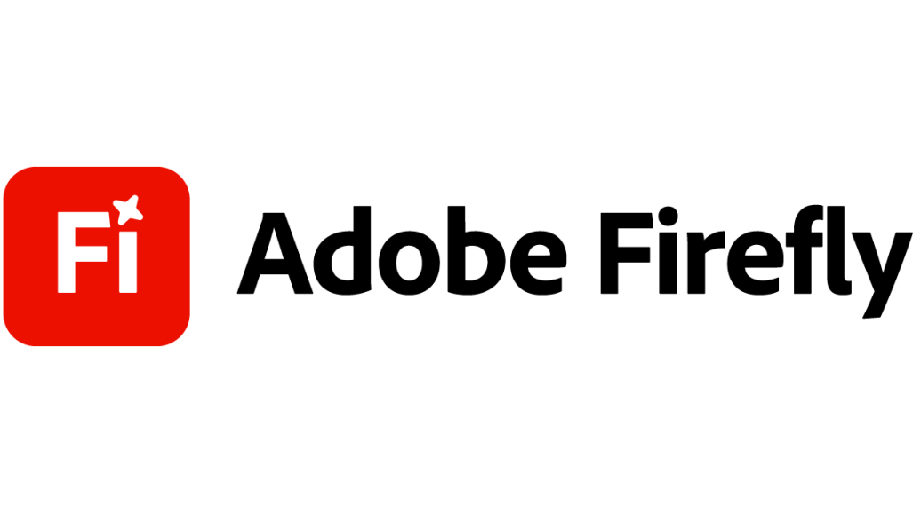
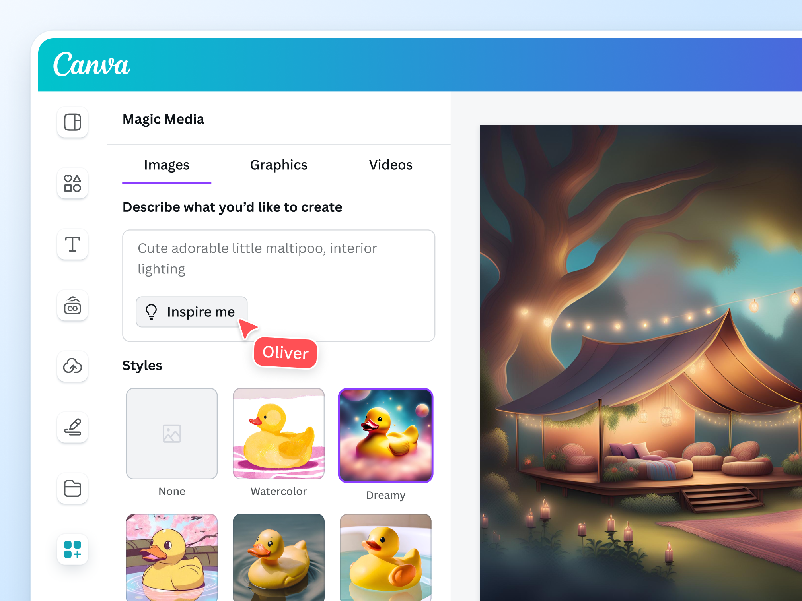
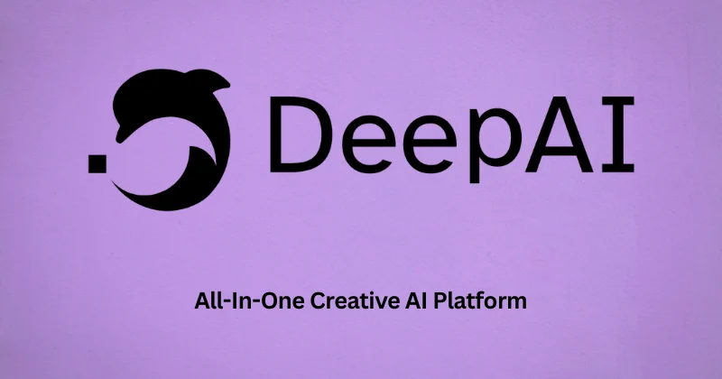

Image generator tools are one of the main reasons why AI-generated media is everywhere today. These tools use artificial intelligence to create images from simple text prompts. For example, a person can type “a cat wearing sunglasses on the beach,” and the tool will generate a realistic or artistic image based on that description.
For example, if someone types “a futuristic city at night with flying cars,” the tool will create an image based on that idea. This makes image generators powerful, but also risky if used to create misleading or fake content.
How Image Generator Tools Work
Image generator tools are trained using large collections of images and text from the internet. During training, the AI learns patterns such as shapes, colors, lighting, and styles.
When a user enters a prompt, the AI does not copy an existing image. Instead, it creates a new one by combining everything it has learned. Many tools use a process where the image starts as random noise and slowly becomes clear and detailed.
Because of this, every image generated is usually unique, even if the same prompt is used.
Common Features of Image Generator Tools
Most image generator tools include:
-
1
Text-to-image generation
Create images from written prompts
-
2
Style selection
Choose different styles like realistic, anime, or painting
-
3
Image editing
Change parts of an existing image
-
4
Variations
Generate multiple versions of the same idea.
-
5
Upscaling
Improve image quality and make it clearer
Examples of Image Generator Tools
1. DALL·E

DALL·E is an AI tool developed by OpenAI. It is known for creating detailed and creative images from text.
- Good at understanding complex prompts
- Can generate both realistic and imaginative images
- Often used for design ideas and illustrations
2. Midjourney
Midjourney is a popular tool that creates highly artistic and visually appealing images.
- Produces very detailed and stylized images
- Commonly used by digital artists
- Known for its unique and dramatic style
3. Stable Diffusion

Stable Diffusion is an open-source image generator, meaning people can run it on their own computers.
- Free and customizable
- Allows more control over image generation
- Widely used by developers and researchers
4. Adobe Firefly

Adobe Firefly is designed for creators and is integrated into Adobe products.
- Focuses on safe and legal content creation
- Useful for graphic design and editing
- Works well with tools like Photoshop
5. Canva AI Image Generator

Canva includes an AI image generator inside its design platform.
- Easy to use for beginners
- Great for social media content and presentations
- Integrated with other design tools
6. DeepAI Image Generator

DeepAI offers simple AI tools, including image generation.
- Basic and easy to access
- Good for quick experiments
- Less advanced compared to other tools
Why People Use Image Generator Tools
People use image generator tools because they are fast, easy, and highly creative. Instead of spending hours drawing or editing, users can create images in just a few seconds by typing a simple description. These tools do not require any artistic skills, which makes them accessible to beginners as well as professionals.
They are also very useful for generating new ideas, especially for designers, content creators, and students who need visuals for their work. In addition, many image generator tools are free or affordable, making them a practical choice for people who want to create images without spending too much money. Because of these advantages, they are widely used in social media, marketing, art, and education.
Risks and Misuse
Despite their benefits, these tools can also be used in harmful ways.
Some risks include:
- Creating fake images that look real
- Spreading misinformation
- Making edited or misleading content
What We've Learned
Image generator tools are powerful AI tools that can create images from simple text. They work by learning from large amounts of data and using that knowledge to generate new and unique visuals. Popular tools like DALL·E, Midjourney, Stable Diffusion, Adobe Firefly, Canva, and DeepAI each offer different features, styles, and levels of control, making them useful for many purposes such as design, education, and content creation.
People use these tools because they are fast, easy to use, and accessible, even for those without artistic skills. However, despite their benefits, they can also be misused to create fake or misleading images. Because of this, it is important to understand how these tools work and to stay aware when viewing images online. By being informed, users can better identify AI-generated media and avoid being misled.
AI-generated images can look very realistic and may be used to spread false information. Always check the source and think critically before trusting what you see.